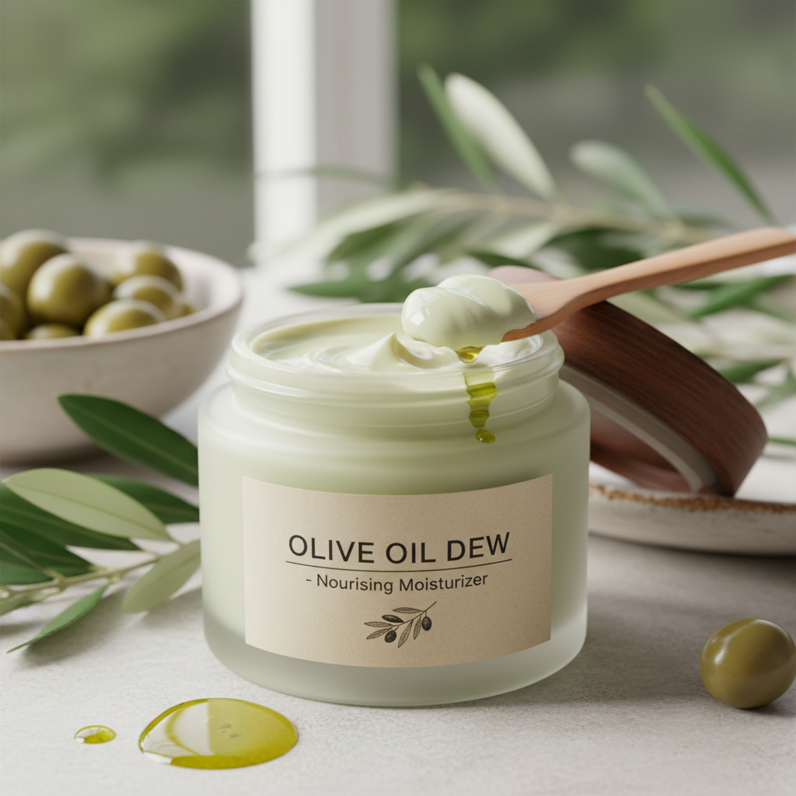

Our Olive Oil Moisturizer is a natural skincare product made from pure Palestinian olive oil. It is designed to hydrate and nourish the skin, leaving it soft, smooth, and healthy.This moisturizer is lightweight and absorbs quickly without leaving a greasy feeling. It helps protect the skin from dryness and is suitable for all skin types, especially dry and sensitive skin.It can be used daily on the face and body for long-lasting moisture.
$50.00 per bottle

Our Natural olive oil soap
Material
Natural olive oil, water, and plant-based ingredients
Origin
Nablus
Weight
200ml
Dimensions
12 cm × 4 cm × 4 cm
Customer Ratings & Reviews
Overall Rating: 4.9 out of 5 — based on 52 verified purchases
The best moisturizer I have ever used!
Rating: 5/5
Reviewer: Emily W. —
I have tried countless moisturizers over the years and nothing has come close to
this one. It absorbs into the skin quickly without leaving a greasy feeling, and
my face feels hydrated all day long. I also love that it is made with natural
Palestinian olive oil and contains no artificial additives. I have already ordered
a second jar and recommended it to all my friends. Absolutely worth every penny.
Perfect for dry skin in winter
Rating: 5/5
Reviewer: Karl H. —
I bought this moisturizer after struggling with very dry skin during the winter
months. After just one week of use morning and night, the dryness and flaking
completely disappeared. The texture is rich but not heavy, and the scent is
a pleasant natural olive fragrance that fades quickly after application.
This is now a permanent part of my skincare routine. Brilliant product.
Great ingredients but took time to get used to the texture
Rating: 4/5
Reviewer: Layla M. —
I really appreciate that this moisturizer is made with pure olive oil and natural
ingredients — no parabens, no artificial fragrance, and no preservatives. It works
wonderfully on my dry patches and my skin genuinely looks healthier since I started
using it. My only comment is that the texture is slightly thicker than I expected,
so I needed a few days to figure out the right amount to apply. Once I got that
right it was perfect. Four stars simply because of the adjustment period —
the product itself is excellent.